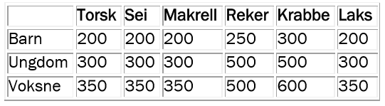
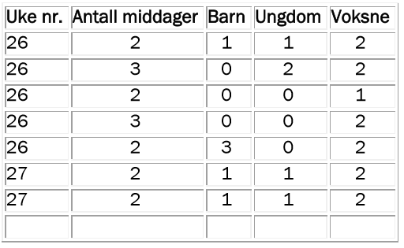

Vi repeterer hvordan vi bruker arrays og objects både til å opprette skjemaer på en nettside og til å innhente informasjon. Dette er veldig eksamensrelevant!
Fiskerne som leverer til Fra fjord til bord, har sine spesialiteter: hvit fisk og skalldyr fra fjorden og laks fra Mandalselva. Det lages en bestillingsliste hver uke, slik at fiskerne kan beregne hvor mye de skal hente opp fra havet.
Under ser du et utdrag av råvaretabellen til Fra fjord til bord. Tabellen forteller hvor mange gram av hvert slag de mener må beregnes per person fra bestillingsprogrammet.
Råvaretabell:

Middagene for uke 26 i 2016 ser slik ut:
Middag 1: Sørlandsk krabbesuppe
Middag 2: Mandalstorsk i smørsaus med Holumspoteter
Middag 3: Laks fra Laudal i spinat (bare for dem som har bestilt tre middager)
Fra fjord til bord får bestillingene på e-post. De må registrere bestillingene i en slik tabell:

Med utgangspunkt i informasjonen over blir du bedt om å utføre følgende oppgaver:
a) Lag en rutine for å registrere bestillingene i bestillingstabellen. Bestillingene skal vises på skjermen. (Grønnsaker som hører til bestillingen, beregnes av samarbeidende bønder og gartnere, så dette behøver du ikke ta hensyn til.)
b) Lag en rutine som beregner totalbehovet for hvert fiskeslag i uke 26. Skriv først en pseudokode eller lag et flytdiagram for rutinen, og programmer deretter løsningen.